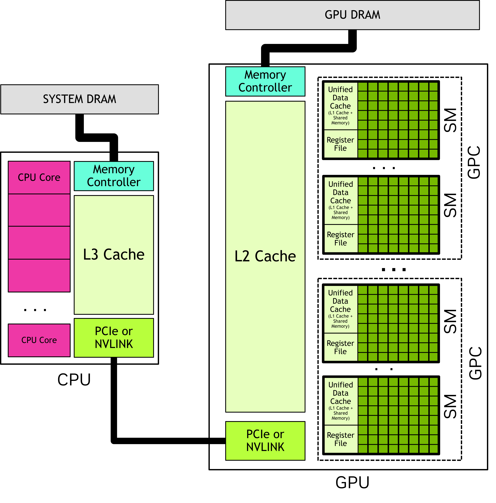
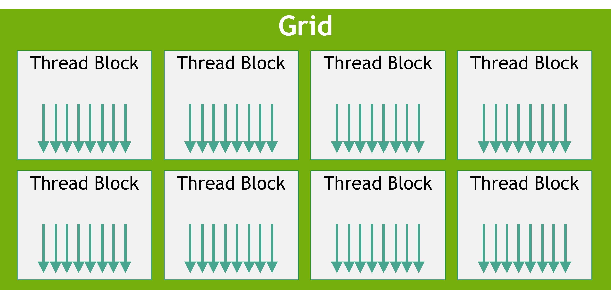

1.2. 编程模型#
本章从语言无关的角度，对 CUDA 编程模型进行高层介绍。这里引入的术语与概念适用于 CUDA 支持的所有编程语言。后续章节会使用 C++ 对这些概念进行说明。
1.2.1. 异构系统#
CUDA 编程模型基于异构计算系统，即系统同时包含 GPU 与 CPU。CPU 及其直连内存分别称为 主机（host） 与 主机内存（host memory）。GPU 及其直连内存分别称为 设备（device） 与 设备内存（device memory）。在某些 SoC 系统中，它们可能集成在同一封装内；在更大型系统中，则可能包含多个 CPU 或 GPU。
CUDA 应用会将部分代码放在 GPU 上执行，但程序总是从 CPU 端开始运行。运行在 CPU 上的主机代码可通过 CUDA API 在主机内存与设备内存间复制数据、启动 GPU 代码执行，并等待数据传输或 GPU 代码完成。CPU 与 GPU 可以并行执行代码，通常通过同时提高两者利用率来获得最佳性能。
应用在 GPU 上执行的代码称为 设备代码（device code）；出于历史原因，在 GPU 上执行的函数称为 内核（kernel）。启动内核执行这一动作称为内核 launch（启动）。可以把一次内核启动理解为：在 GPU 上并行启动大量线程来执行该内核代码。GPU 线程与 CPU 线程在形式上相似，但在正确性与性能相关行为上存在重要差异，后文会详细说明（见 第 3.2.2.1.1 节）。
1.2.2. GPU 硬件模型#
Like any programming model, CUDA relies on a conceptual model of the underlying hardware. For the purposes of CUDA programming, the GPU can be considered to be a collection of Streaming Multiprocessors (SMs) which are organized into groups called Graphics Processing Clusters (GPCs). Each SM contains a local register file, a unified data cache, and a number of functional units that perform computations. The unified data cache provides the physical resources for shared memory and L1 cache. The allocation of the unified data cache to L1 and shared memory can be configured at runtime. The sizes of different types of memory and the number of functional units within an SM can vary across GPU architectures.
注意
GPU 的实际硬件布局以及底层执行编程模型的物理方式可能因架构而异。但这些差异不应影响按 CUDA 编程模型编写软件的正确性。
{kind=link}

图 2 GPU 由多个流式多处理器（SM）组成，每个 SM 内包含多个功能单元。图形处理簇（GPC）由若干 SM 组成。一个 GPU 可看作连接至 GPU 内存的一组 GPC。CPU 通常包含多个核心及连接系统内存的内存控制器。CPU 与 GPU 通过 PCIe 或 NVLINK 等互连进行连接。#
1.2.2.1. 线程块与网格#
当应用启动内核时，通常会同时启动大量线程，很多情况下可达到数百万个。这些线程会被组织为多个块，一个线程块称为 thread block。线程块进一步组成 grid（网格）。同一网格中的所有线程块具有相同的大小与维度。 Figure 3 shows an illustration of a grid of thread blocks.
{kind=link}

图 3 线程块网格。每个箭头表示一个线程（箭头数量不代表实际线程数）。#
线程块和网格都可以是一维、二维或三维结构，这些维度有助于将单个线程映射到具体工作单元或数据元素。
When a kernel is launched, it is launched using a specific execution configuration which specifies the grid and thread block dimensions. The execution configuration may also include optional parameters such as cluster size, stream, and SM configuration settings, which will be introduced in later sections.
Using built-in variables, each thread executing the kernel can determine its location within its containing block and the location of its block within the containing grid. A thread can also use these built-in variables to determine the dimensions of the thread blocks and the grid on which the kernel was launched. This gives each thread a unique identity among all the threads running the kernel. This identity is frequently used to determine what data or operations a thread is responsible for.
同一线程块内的所有线程都在同一个 SM 上执行，因此块内线程可以高效通信与同步。线程块内的所有线程都可访问片上共享内存，该内存可用于线程间交换信息。
A grid may consist of millions of thread blocks, while the GPU executing the grid may have only tens or hundreds of SMs. All threads of a thread block are executed by a single SM and, in most cases [1], run to completion on that SM. There is no guarantee of scheduling between thread blocks, so a thread block cannot rely on results from other thread blocks, as they may not be able to be scheduled until that thread block has completed. Figure 4 shows an example of how thread blocks from a grid are assigned to an SM.

Figure 4 Each SM has one or more active thread blocks. In this example, each SM has three thread blocks scheduled simultaneously. There are no guarantees about the order in which thread blocks from a grid are assigned to SMs.#
The CUDA programming model enables arbitrarily large grids to run on GPUs of any size, whether it has only one SM or thousands of SMs. To achieve this, the CUDA programming model, with some exceptions, requires that there be no data dependencies between threads in different thread blocks. That is, a thread should not depend on results from or synchronize with a thread in a different thread block of the same grid. All the threads within a thread block run on the same SM at the same time. Different thread blocks within the grid are scheduled among the available SMs and may be executed in any order. In short, the CUDA programming model requires that it be possible to execute thread blocks in any order, in parallel or in series.
1.2.2.1.1. 线程块簇#
In addition to thread blocks, GPUs with compute capability 9.0 and higher have an optional level of grouping called clusters. Clusters are a group of thread blocks which, like thread blocks and grids, can be laid out in 1, 2, or 3 dimensions. Figure 5 illustrates a grid of thread blocks that is also organized into clusters. Specifying clusters does not change the grid dimensions or the indices of a thread block within a grid.

Figure 5 When clusters are specified, thread blocks are in the same location in the grid but also have a position within the containing cluster.#
Specifying clusters groups adjacent thread blocks into clusters and provides some additional opportunities for synchronization and communication at the cluster level. Specifically, all thread blocks in a cluster are executed in a single GPC. Figure 6 shows how thread blocks are scheduled to SMs in a GPC when clusters are specified. Because the thread blocks are scheduled simultaneously and within a single GPC, threads in different blocks but within the same cluster can communicate and synchronize with each other using software interfaces provided by Cooperative Groups. Threads in clusters can access the shared memory of all blocks in the cluster, which is referred to as distributed shared memory.The maximum size of a cluster is hardware dependent and varies between devices.
Figure 6 illustrates the how thread blocks within a cluster are scheduled simultaneously on SMs within a GPC. Thread blocks within a cluster are always adjacent to each other within the grid.

Figure 6 When clusters are specified, the thread blocks in a cluster are arranged in their cluster shape within the grid. The thread blocks of a cluster are scheduled simultaneously on the SMs of a single GPC.#
1.2.2.2. Warp 与 SIMT#
在线程块内部，线程按 32 个一组组织，称为 warp。warp 按 单指令多线程（SIMT）方式执行内核代码。 In SIMT, all threads in the warp are executing the same kernel code, but each thread may follow different branches through the code. That is, though all threads of the program execute the same code, threads do not need to follow the same execution path.
When threads are executed by a warp, they are assigned a warp lane. Warp lanes are numbered 0 to 31 and threads from a thread block are assigned to warps in a predictable fashion detailed in Hardware Multithreading.
All threads in the warp execute the same instruction simultaneously. If some threads within a warp follow a control flow branch in execution while others do not, the threads which do not follow the branch will be masked off while the threads which follow the branch are executed. For example, if a conditional is only true for half the threads in a warp, the other half of the warp would be masked off while the active threads execute those instructions. This situation is illustrated in Figure 7. When different threads in a warp follow different code paths, this is sometimes called warp divergence. It follows that utilization of the GPU is maximized when threads within a warp follow the same control flow path.

Figure 7 In this example, only threads with even thread index execute the body of the if statement, the others are masked off while the body is executed.#
In the SIMT model, all threads in a warp progress through the kernel in lock step. Hardware execution may differ. See the sections on Independent Thread Execution for more information on where this distinction is important. Exploiting knowledge of how warp execution is actually mapped to real hardware is discouraged. The CUDA programming model and SIMT say that all threads in a warp progress through the code together. Hardware may optimize masked lanes in ways that are transparent to the program so long as the programming model is followed. If the program violates this model, this can result in undefined behavior that can be different in different GPU hardware.
While it is not necessary to consider warps when writing CUDA code, understanding the warp execution model is helpful in understanding concepts such as global memory coalescing and shared memory bank access patterns. Some advanced programming techniques use specialization of warps within a thread block to limit thread divergence and maximize utilization. This and other optimizations make use of the knowledge that threads are grouped into warps when executing.
One implication of warp execution is that thread blocks are best specified to have a total number of threads which is a multiple of 32. It is legal to use any number of threads, but when the total is not a multiple of 32, the last warp of the thread block will have some lanes that are unused throughout execution. This will likely lead to suboptimal functional units utilization and memory access for that warp.
SIMT is often compared to Single Instruction Multiple Data (SIMD) parallelism, but there are some important differences. In SIMD, execution follows a single control flow path, while in SIMT, each thread is allowed to follow its own control flow path. Because of this, SIMT does not have a fixed data-width like SIMD. A more detailed discussion of SIMT can be found in SIMT Execution Model.
1.2.3. GPU 内存#
在现代计算系统中，高效利用内存与充分利用计算功能单元同样重要。异构系统包含多个内存空间，GPU 除缓存外还包含多种可编程片上内存。下文将更详细介绍这些内存空间。
1.2.3.1. 异构系统中的 DRAM 内存#
GPU 与 CPU 均连接有各自的 DRAM。在多 GPU 系统中，每个 GPU 都拥有自身独立的内存。 From the perspective of device code, the DRAM attached to the GPU is called global memory, because it is accessible to all SMs in the GPU. This terminology does not mean it is necessarily accessible everywhere within the system. The DRAM attached to the CPU(s) is called system memory or host memory.
Like CPUs, GPUs use virtual memory addressing. On all currently-supported systems, the CPU and GPU use a single unified virtual memory space. This means that the virtual memory address range for each GPU in the system is unique and distinct from the CPU and every other GPU in the system. For a given virtual memory address, it is possible to determine whether that address is in GPU memory or system memory and, on systems with multiple GPUs, which GPU memory contains that address.
There are CUDA APIs to allocate GPU memory, CPU memory, and to copy between allocations on the CPU and GPU, within a GPU, or between GPUs in multi-GPU systems. The locality of data can be explicitly controlled when desired. Unified Memory, discussed below, allows the placement of memory to be handled automatically by the CUDA runtime or system hardware.
1.2.3.2. GPU 片上内存#
除全局内存外，每个 GPU 还包含片上内存。每个 SM 都有自己的寄存器文件和共享内存。 These memories are part of the SM and can be accessed extremely quickly from threads executing within the SM, but they are not accessible to threads running in other SMs.
The register file stores thread local variables which are usually allocated by the compiler. The shared memory is accessible by all threads within a thread block or cluster. Shared memory can be used for exchanging data between threads of a thread block or cluster.
The register file and unified data cache in an SM have finite sizes. The size of an SM’s register file, unified data cache, and how the unified data cache can be configured for L1 and shared memory balance can be found in Memory Information per Compute Capability. The register file, shared memory space, and L1 cache are shared among all threads in a thread block.
To schedule a thread block to an SM, the total number of registers needed for each thread multiplied by the number of threads in the thread block must be less than or equal to the available registers in the SM. If the number of registers required for a thread block exceeds the size of the register file, the kernel is not launchable and the number of threads in the thread block must be decreased to make the thread block launchable.
Shared memory allocations are done at the thread block level. That is, unlike register allocations which are per thread, allocations of shared memory are common to the entire thread block.
1.2.3.2.1. 缓存#
In addition to programmable memories, GPUs have both L1 and L2 caches. Each SM has an L1 cache which is part of the unified data cache. A larger L2 cache is shared by all SMs within a GPU. This can be seen in the GPU block diagram in Figure 2. Each SM also has a separate constant cache, which is used to cache values in global memory that have been declared to be constant over the life of a kernel. The compiler may place kernel parameters into constant memory as well. This can improve kernel performance by allowing kernel parameters to be cached in the SM separately from the L1 data cache.
1.2.3.3. 统一内存#
When an application allocates memory explicitly on the GPU or CPU, that memory is only accessible to code running on that device. That is, CPU memory can only be accessed from CPU code, and GPU memory can only be accessed from kernels running on the GPU[2] . CUDA APIs for copying memory between the CPU and GPU are used to explicitly copy data to the correct memory at the right time.
CUDA 的 统一内存 功能允许应用分配可同时被 CPU 与 GPU 访问的内存。 The CUDA runtime or underlying hardware enables access or relocates the data to the correct place when needed. Even with unified memory, optimal performance is attained by keeping the migration of memory to a minimum and accessing data from the processor directly attached to the memory where it resides as much as possible.
The hardware features of the system determine how access and exchange of data between memory spaces is achieved. Section Unified Memory introduces the different categories of unified memory systems. Section Unified Memory contains many more details about use and behavior of unified memory in all situations.